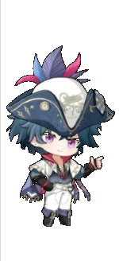
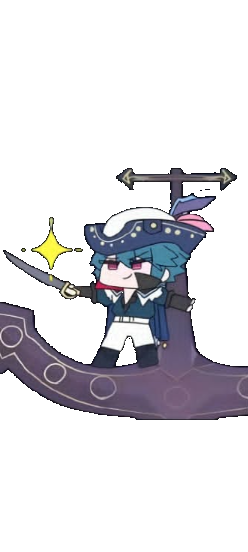

Welcome aboard! This ship's log contains all records of my journey through the raging currents of Physics. As I set sail on my learning voyage, I kindly invite you to follow the route I took to understand new concepts and information that I encountered.
I chose "Ship's Log: Sailing Through Physical Concepts" because my learning journey in physics can be compared to a ship sailing the ocean. The waters aren't always calm. Sometimes you have to push through storms and hardships to keep moving forward. This journal, then, is a compilation of everything I've learned along my physics voyage.
Each stop on the voyage map is a port, one topic from our course guide. Every port holds my notes on the concept, a KWLSF manifest (what I Knew, Wanted to know, Learned, Suggest, and how I'm Feeling that week), and any media I gathered along the way.


A compiled gallery of outputs from the voyage. Click an entry to open it and see every photo with its description.